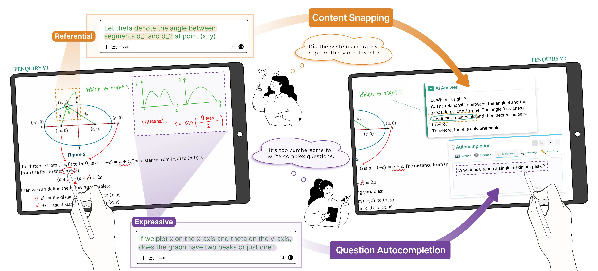
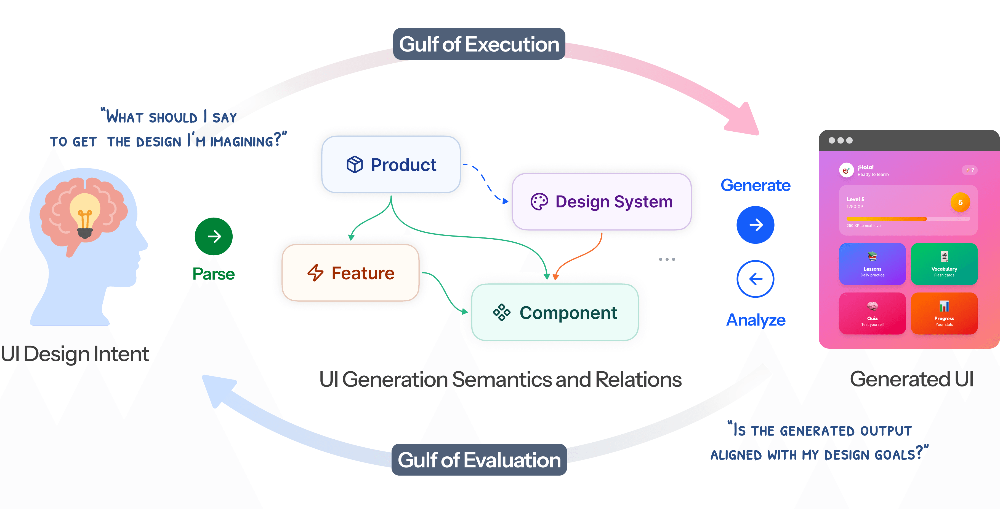

I’m Hyunwoo Kim, a Master's student studying in HCIL at Seoul National University and an HCI researcher with a background in linguistics.
I aim to build human-centered AI systems and study how people express intent, understand outputs, and refine them through interaction.
Publications
2026

Penquiry: A Pen-based Interactive In-situ Q&A System Leveraging LLMs
Jeongmin Rhee, Changhee Lee, Hyunwoo Kim, Kiroong Choe, Bohyoung Kim, Sungahn Ko, and Jinwook Seo
UIST ’26 · Conference Full Paper
2026

Bridging Gulfs in UI Generation through Semantic Guidance
Seokhyeon Park, Soohyun Lee, Eugene Choi, Hyunwoo Kim, Minkyu Kweon, Yumin Song, and Jinwook Seo
CHI ’26 · Conference Full Paper
Projects
HCIongoing
Reader-grounded Text Enrichment
How typographic emphasis shapes readers’ impressions and how we can help creators perform effective highlighting.
IRinternship
Retriever as Environment
Investigation of query variation through retrieval feedback in RAG pipeline. Prompt engineering and NLP task evaluations.
AI Systems
Knowledge-graph RAG for UAM Control
An ontology and retrieval pipeline for natural-language queries over simulated urban-air-mobility traffic.
Paper ↗
BITAmin Projects
Applied AI team projects
RAG-Based Personalized Course Recommendation
A RAG-based advisor agent over 402 syllabi and community reviews for personalized course recommendations.
Multi-Agent Company Analysis for Job Preparation
A Collaborative agent pipeline that synthesizes company, role, interview, applicant, and news data into tailored job-search reports.
Multimodal Agents for Diet Feedback & Exercise Optimization
A distributed agent system combining meal images, nutrition and exercise data, schedules, and goals and producing personalized feedback / weekly routines.
Background
Education and experience
Education
M.S. in Computer Science & Engineering
Seoul National University · HCI Lab
Current
B.S. in Artificial Intelligence
Seoul National University
Completed
B.A. in Linguistics
Seoul National University
Completed
Experience
Researcher · SNU HCI Lab
Human–AI interaction, empirical studies, and research writing
Research Intern · SNU Language & Data Intelligence Lab
Query analysis, retrieval experiments, and RAG evaluation
DEVOCEAN YOUNG in SKT
Knowledge-graph modeling and RAG for UAM traffic control
Awards
Excellence Award
2023 Science Policing Materials, Parts & Equipment Idea Competition
Social Challenge Award
SNU Social Contribution PLUS+ Competition
Excellence Award
One-Way · SNU Human Tube Film Competition
Film portfolio
＋
Show film portfolio
Hide film portfolio
8 works